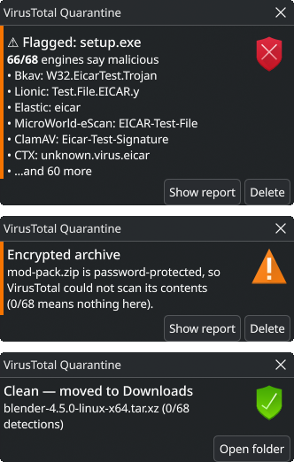

VirusTotal Quarantine
RELEASEDEvery download checked on VirusTotal before it reaches your Downloads folder.
Your browser saves each download into a hidden quarantine folder. VirusTotal Quarantine locks it, looks it up on VirusTotal, and moves it to your Downloads folder if no antivirus engine flags it. Anything flagged waits for you, with its report a click away.
- No window, no tray icon: everything happens in notifications
- Sets up Chrome, Edge, Firefox, Safari, Brave and more by itself
- Files stay locked until they're checked, and private files are never uploaded without asking
- Runs on:
- Windows 10/11, macOS, Linux
- Written in:
- Python
- License:
- MIT, free and open source
